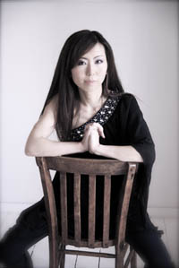

2011-2012 Fine Arts Series:
Winners’ Art Exhibition, Dana Dabagia and Ron SuverOpening Reception: Sunday, May 20, 2012, 2-4 p.m.
Exhibition: May 20 through June 1, 2012, 2-4 p.m. CDT daily
Dana Dabagia, Purchase Award
“Through a Child's Eyes” – oil on canvas
now part of the Church’s permanent fine art collection
Ron Suver, Best of Show
“Potawatomi Wildlife Park”
Photography, infrared hand colored

Sunday, October 23, 2011, 4 p.m. CDT
The Konevets Quartet, under the direction of Igor Dmitriev, was founded in 1992, by graduates of the St. Petersburg Music Conservatoire, Glinka Choral Academy; who sang in the Konevets Holy Trinity Monastery choir. Their goal was to share the rich Russian vocal tradition with audiences the world over and, they are dedicated to creating a perfect harmonious sound. Their repertoire was therefore created especially for this purpose, and remains such to this day.
The greater part of their repertoire is Orthodox sacred music, ranging from chants and hymns by twentieth century composers, such as Chesnokov, Grechaninov, and Stravinsky, to ancient chants and hymns in original one, two, three-part arrangements and, in contemporary four-part arrangements; sometimes re-harmonized by the Quartet. Their secular concert repertoire features Russian and Ukrainian folk songs, dances and Imperial regimental songs and marches, which were forbidden during Communist times. The third portion of the repertoire comprises of lyrics by Russian poets such as Pushkin and Lermontov, set to music by Tchaikovsky, Borodin, Taneyev and other famous composers.
Konevets Quartet’s impressive accomplishments merit worldwide recognition. These professional musicians have sung in all the great cathedrals of Russia, toured and participated in prestigious international festivals throughout Europe and the U.S. and their highly acclaimed recordings are on sale in many countries. In 2010, the Quartet received Laureate status at the eminent International Choir Competition in St. Petersburg. They have toured extensively, with wide acclaim, throughout Europe & North America where they have also performed with baritone soloist Dmitri Hvorostovsky and basso profundo, Vladimir Miller.
While concert tours are the Quartet’s main source of income, they share their revenue toward restoration of the Konevets Monastery and its daughter church in the heart of St. Petersburg.
Violinist Andrey Baranov
with Pianist Miki Aoki
Sunday, November 13, 2011, 4 p.m. CST
Russian violinist Andrey Baranov is among the leading violinist of his generation. He has been a Laureate of numerous international competitions including Indianapolis, Sendai, Unisa, Oistrach and Paganini (Moscow). Baranov’s interpretation of the Tchaikovsky concerto has been hailed by the Franken Post as “charmed with an instinct for tone color” and The Strad called Baranov “a natural player who makes you listen....one is struck by his sound and his large music-making gestures.”
Since making his debut in 2005 at St. Petersburg Philharmonie Hall with Vasily Petrenko and the Philharmonic Orchestra, Baranov has performed on the world’s renowned stages such as the Concertgebouw Amsterdam, Grofler Saal Mozarteum, Circle Theater, Cadogan Hall London and Tchaikovsky Hall in Moscow. His recent and upcoming engagements include tours in Russia, South Africa, Turkey, France, Germany, USA and Asia.
He released two CDs in 2010. The first was a recital recording, given as part of a prize by Orchestre de la Suisse Romande in recognition of his achievement and the second was the Tchaikovsky Concerto with Hof Symphoniker conducted by Arn Goerke and co-produced by Bayerischer Rundfunk. Many of Baranov’s performances have been broadcast worldwide on BR Klassik, Radio Orpheus, YLE Radio (Finland), WFYI (USA), and NHK Sendai (Japan).
Baranov has appeared with leading international orchestras including the St. Petersburg Philharmonic, Sendai Philharmonic, Royal Philharmonic London, Qingdao Symphony, and the Krasnoyarsk Philharmonic under conductors Vasily Petrenko, Mark Kadin, Volodymyr Sirenko, Yuri Gilbo, Johannes Wildner, David Afkham and Kazumi Yamashita.
In 2008 Baranov was the 1st prize winner at both the Benjamin Britten International Violin Competition in London and the Henri Marteau International Violin Competition in Germany. In addition, he won the “New Master on Tour” prize from Holland Music Session, the Mozarteum prize for the best violinist in the summer academy and was featured in the prestigious Salzburger Festspiele.
In 2009, at the age of 23 Baranov was appointed as teaching assistant to Pierre Amoyal at Conservatoire de Lausanne. Baranov is also a leading member of Camerata de Lausanne. Together with Pierre Amoyal he frequently tours throughout different continents.
Born in St. Petersburg in 1986 into a family of musicians, Baranov began playing the violin at the age of five. He attended the Rimsky-Korsakov Conservatory, St. Petersburg Conservatory and Consevatoire de Lausanne. He studied with Vladimir Ovcharek, Pavel Popov and Pierre Amoyal and has taken masterclasses from György Pauk, Boris Kushnir, Liana Issakadze and Kim Kashkashian among many others.
 Born in Tokyo, Miki Aoki made her orchestral debut at the Royal Festival Hall in London with the National Symphony Orchestra at the age of 12. A dedicated recitalist and chamber musician, Miki has since performed regularly across Europe, USA and in Asia.
Recent engagements include a tour through South East Asia, an appearance at the Menuhin Festival in Gstaad with Russian violinist Andrey Baranov, and invitations to the Great Lakes Chamber music festival in the United States and the Valdres Festival in Norway. Future seasons include concerto performances with the Washington Sinfonietta (USA), a solo recital in Tokyo and concerts in Austria, Germany, Norway, Turkey and Switzerland. Her first solo CD is about to be released.
Miki Aoki has appeared on the stages of such prestigious venues as St. Martin-in-the Fields, St. John’s Smith Square, Royal Festival Hall and Purcell Room at South Bank Centre, Barbican Centre (U.K.), Laeizhalle, Mozart-Saal, Barlach Haus, Bechstein Haus (Germany), Musicasa Tokyo, Wiener-Saal Salzburg, as well as in festivals Mecklenburg-Vorpommen, Salzburger Festspiele, Rheingau, Otzberger Sommerkonzerte (Germany), Menuhin Festival (Switzerland), Beaulieu-sur-la Mer (France), Tembi Festival (Inodnesia), Phnom Penh International Music Festival (Cambodia) and International Classical Music Festival (Myanmar). In 2006 Miki was invited by Itzhak Perlman to his Chamber music festival in Long Island, New York.
Miki has appeared as a soloist with the National Symphony, London Soloist Chamber Orchestra, Hamburg Camerata and Washington Sinfonietta. Her solo and chamber music performances have been broadcast on NDR-North German Radio, Radio Suisse Romande and Hessicher Rundfunk.
In 2006 Miki met the legendary violinist Pierre Amoyal who gave her opportunities to collaborate with him in recitals and has taken her across the world. Since 2007 Miki is the class accompanist for Pierre Amoyal at the Conservatoire de Lausanne.
Miki collaborates with Pierre Amoyal, Andrey Baranov, Francois Salque, Elisabeth Vidal, Kuss Quartet, Ariel Quartet, and members of prestigious orchestras such as Gewandhaus Leipzig, Munich Philharmonic, Bayerische Rundfunk Orchestra, Tornhalle Zuerich and Orchestre de la Radio Suisse Romande.
From 2006-2008 Miki was selected by Y. Menuhin-Live Music Now- an extensive organization in Germany providing classical concerts in hospitals, prisons and retirement homes. With her duo-partner, Miki gave a number of concerts and was selected to play as one of three ensembles at the Menuhin gala concert in Hamburg.
Miki started playing the piano at age 4 and moved to London at age 9 where she attended the Purcell School of Music. She holds degrees from Indiana University and Yale University. In 2007 Miki completed a Konzertexamen degree at Hochschule fuer Musik und Theater Hamburg with distinction (Mit Auszeichnung). Her teachers include Roshan Magub, James Gibb, Reiko Neriki, György Sebök, Boris Berman and Evgeni Koroliov.
Carillon Recitals
Sunday, June 24 – Helen Hawley, Grand Rapids, Michigan
Sunday, July 29 – Sue Bergren, Naperville, Illinois
Sunday, August 26 – Dennis Curry, Bloomfield Hills, Michigan
All carillon recitals begin at 4:00 p.m. CDT.
Please bring a lawn chair to enjoy the carillon recitals.